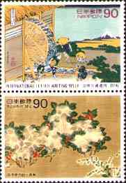
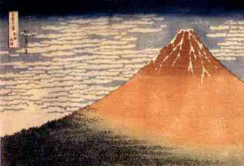
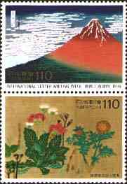
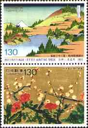
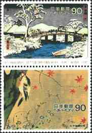
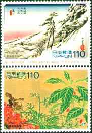
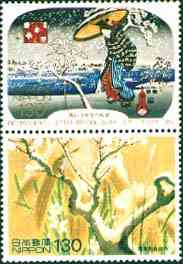

International Letter Writing Week was established under a resolution passed at the 14th conference of the Universal postal Union in 1957. It purpose is to promote world peace by encouraging letter-writing as a medium of cultural exchange among the people of the world. In Japan, International Letter Writing Week starts on October 6 each year. Tip: Point the images with the mouse index to get more information about the works of of art displayed.
 |
 |
 |
Katsushika Hokusai (1760-1849)
created a vast number of pictures depicting actors, beautiful women, and
everyday customs. He initially made his reputation through illustrations
contained in volumes of doggerel verses and light novels. His popularity
sprang from his finely detailed drawings and dynamic representation of
people and facial expressions.
His
many masterpieces include landscape anthologies like "Views of Famous
Places in the Eastern Capital"
and "Eight Famous Views of Oni", woodblock prints of
Western-style landscapes, and the celebrated "Hokusai Manga", a
collection of uninhibited sketches in which Hokusai let his imagination
run riot. "The Thirty-Six Views of Mount Fuji" are considered to
embody the essence of Hokusai's art.
In this work (Fugaku Sanjurokkei) Hokusai depicted
Mount Fuji from a variety of different locations. Most of the pictures
depict ordinary people going about their everybody business.
 |
 |
 |
 |
Ogata Korin
(1658-1716) is the founder of the Korin school of painting. He was one of
the greatest masters of Japanese painting in the middle of the Edo Period.
His style is characterized by boldness, brilliance, delicacy and
immaculate taste. In addition to his work as a painter, Korin also created
designs for application to maki-e gold lacquer wares and other fields of
the crafts. Some of the patterns he created, such as korinbai, korinsui,
korin-oonami, were named after him.
The work named Shiki Sokazu Byobu ("Pair of Small
Six-Leaf Folding Screens: Flowers of the Four Seasons") was contained
in the final section of Korin hyakuzu ("One Hundred Paintings by
Korin") in the form of a gold-painted silk scroll. Korin made
sketches of seasonal flowers to create a highly stylized mode of artistic
expression, employing colors of exceptional brilliance.
The three vertical pairs on the right depict the works of Japanese masters Hiroshige Ando (1797-1858), from the cycle "53 Stations of Tokaido" and of Hoitsu Sakai (1761-1828), "Flowers and Bird Pictorial around the Four Seasons". The first vertical pair shows a work of Hiroshige and one of Korin.
Background: Shibata Zesshin (1807-1891). Blossom branches and bamboo. Cologne, Herbig-Haarhaus Lacquer Museum.

| Revised: 07/04/00. Copyright © 1999 - 2000 by Victor Manta, Switzerland. All rights reserved in all countries. |
|
|